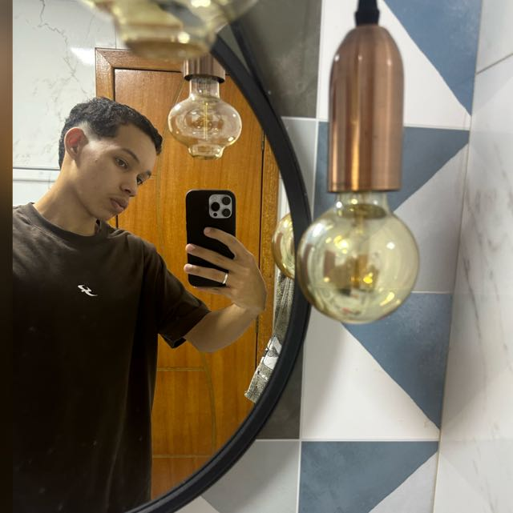

Sobre Mim
Sou Daniel , 18 anos, e atualmente moro em Cariacica. Estou cursando Sistemas de Informação na UVV
Habilidades Pessoais
Pensamento crítico
Hobbies
Uma das coisas que mais gosto de fazer é jogar bola, pratico o futebol desde pequeno, sempre foi uma paixão, que se tornou ainda maior com o passar dos anos, já ganhei títulos como metropolitano, estudal e até regional sudeste, infelizmenta não consegui me tornar o jogador profissional que sonheir em ser, mas ainda tenho esse esporte com muito carinho e sou grato a tudo que já me proporcionou.
Vida Acadêmica
Sistemas da Informação 1° Período